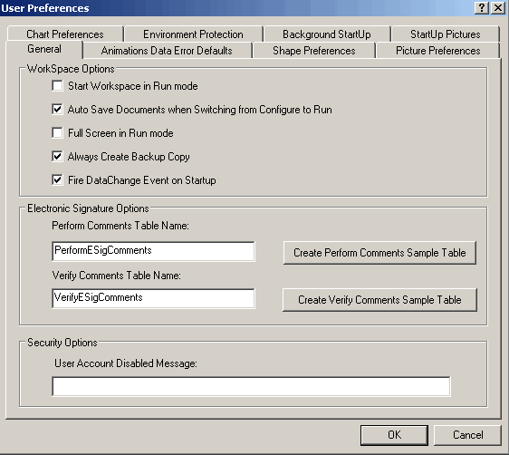
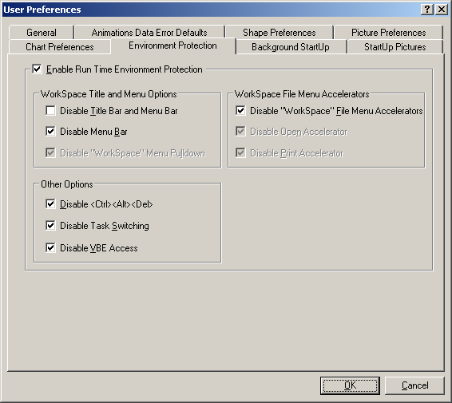

Setting up DeltaV Operate for multiple monitors or Operator Keyboard
Follow this procedure to properly setup DeltaV Operate to run on Operator Keyboard or multiple monitors.
- Click Start > DeltaV Operator > DeltaV Operate.
- Switch to Configure mode.
- Click Workspace > User Preferences.
-
On the General tab, deselect Full Screen in Run mode. Full Screen
in Run mode does not work well with multiple monitors.

- Click OK and switch to Run mode.
- Click the Title Bar of the DeltaV Operate (Run) window and position its top left corner at the top left corner of Monitor 1. (Keep the mouse button pressed to move the window.)
- Click the bottom right corner of the DeltaV Operate (Run) window and position it at the bottom right corner of Monitor 3.
- Switch to Configure mode.
- Open the User Preferences dialog again (Workspace > User Preferences) and select the Environment Protection tab.
-
Make the following selections on the Environment Protection tab:
Enable Run Time Environment Protection
Disable Menu Bar
Disable <Ctrl><Alt><Del>
Disable Task Switching
Disable VBE Access
Disable "Workspace" File Menu Accelerators

- Click OK and switch to Run mode. DeltaV Operate will open across all four screens.